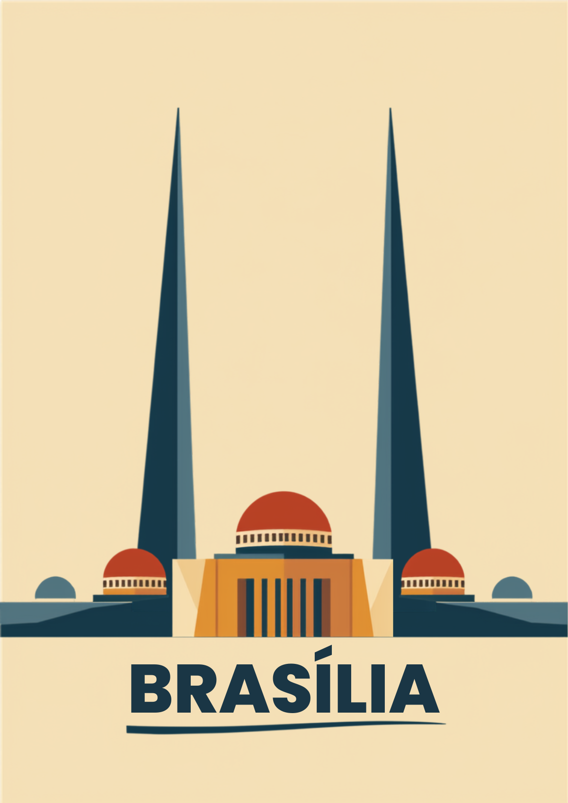

Guia da capital · Patrimônio Mundial da UNESCO desde 1987
A cidade que Lúcio Costa traçou e Oscar Niemeyer ergueu em concreto e curva, no meio do cerrado — inaugurada em 1960 e, até hoje, sem nada parecido no mundo.

habitantes
ano de fundação
km² de área
de altitude
pontos turísticos
A cidade em imagens: dos monumentos da Esplanada ao cerrado que a cerca.
Fotos: Wikimedia Commons (CC BY-SA) · Clique para ampliar
De palácios e museus a parques de cerrado nativo — o essencial para montar seu roteiro.
Uma maquete eletrônica dos monumentos mais marcantes do Plano Piloto. Arraste para girar.
O que ajuda de verdade antes de pisar no Eixo Monumental.